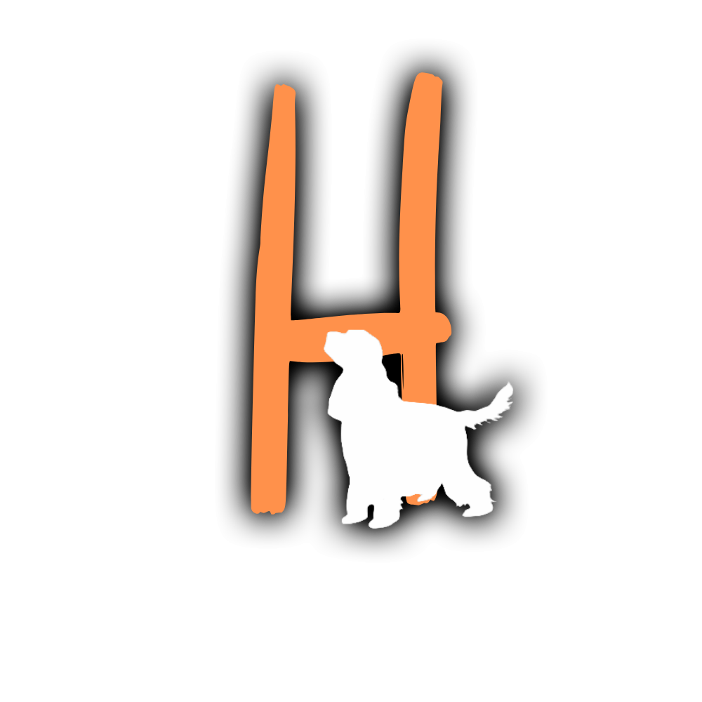
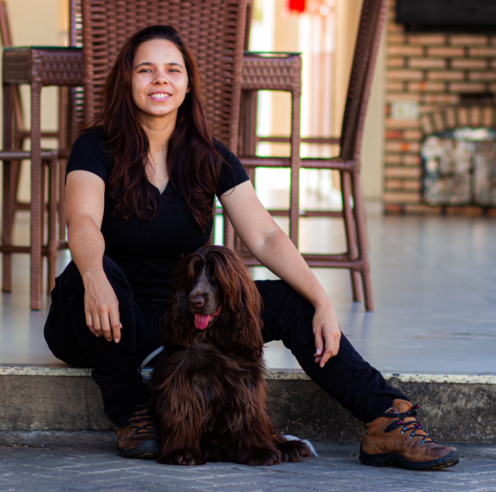
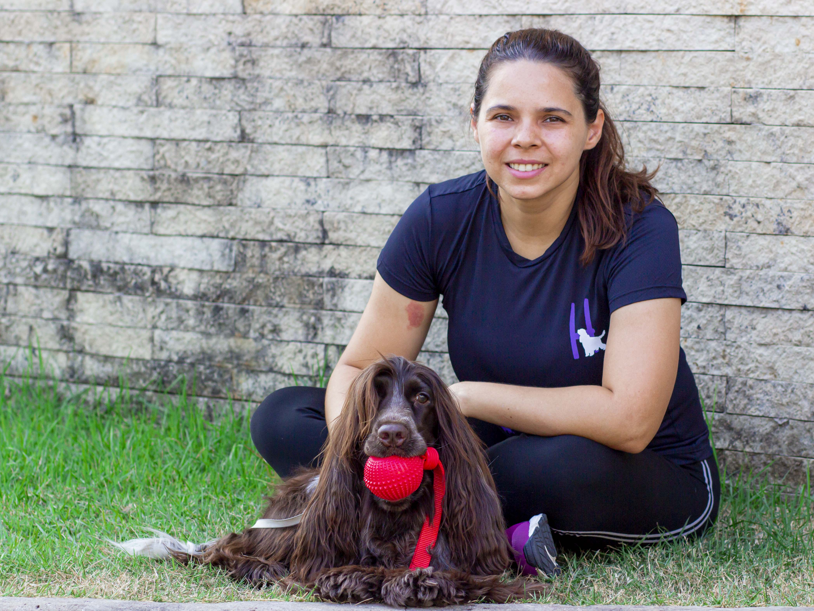

♡
Respeito à natureza canina
Amar também é permitir que o cão seja cão, compreendendo seus instintos e necessidades.

AdestreAprenda a educar seu filhote com carinho, disciplina e reforço positivo. Videoaulas práticas para construir uma convivência mais leve e segura.


Adestradora experiente, com atuação no treinamento de cães domésticos e cães farejadores para a polícia, e estudante de Medicina Veterinária.
Acredito que cães aprendem melhor quando compreendemos suas necessidades, seus instintos e aquilo que os motiva. Meu trabalho combina conhecimento, paciência, limites claros e respeito à natureza de cada animal.
Educar não é intimidar. É criar oportunidades para o cachorro aprender, respeitando seu jeito de ser.
Amar também é permitir que o cão seja cão, compreendendo seus instintos e necessidades.
Valorizar os comportamentos desejados com recompensas que fazem sentido para cada animal.
Comunicação clara, consistência e limites, sem agressões nem métodos baseados no medo.
Assista a vídeos da Hannah e conheça mais de perto seu trabalho com cães. Clique para reproduzir.
Da adaptação ao novo lar aos desafios da convivência: escolha aulas práticas para ensinar com consistência, respeito e reforço positivo.
A chegada de um filhote traz alegria — e muitas dúvidas. Aprenda a construir uma rotina com orientações claras desde os primeiros dias.
Ideal para quem quer começar com segurança e evitar confusões na rotina.
O que você e seu cão vão desenvolverAulas em vídeo para assistir e colocar em prática, respeitando o ritmo de aprendizado do seu cão.
ou em até 6x de R$ 8,82 no cartão de crédito
Seu cão já aprendeu o começo? Avance para situações que exigem mais atenção, controle e cooperação no cotidiano.
Ideal para tutores que desejam ampliar o repertório de um cão que já conhece o básico.
O que você e seu cão vão desenvolverAulas em vídeo para assistir e colocar em prática, respeitando o ritmo de aprendizado do seu cão.
ou em até 8x de R$ 8,29 no cartão de crédito
Valores à vista apresentados como referência. O parcelamento informado inclui encargos (Guia 01: total de R$ 52,92; Guia 02: total de R$ 66,32). Confira o valor final no checkout da Hotmart.
Escolha seu guia e comece a transformar a rotina com seu cachorro.
Comece pelo básico ou avance para novas habilidades.
Finalize o pagamento na plataforma e siga as orientações de acesso.
Aprenda com as videoaulas e pratique com seu cão no dia a dia.
Tudo o que você precisa saber antes de escolher seu guia.
Não. Os dois guias são cursos online, com aulas em vídeo.
Depois da confirmação do pagamento, a Hotmart fornece as orientações para acessar o conteúdo adquirido.
O Guia 01 é indicado para quem está começando com um filhote. O Guia 02 é uma continuação para cães que já aprenderam os comandos básicos.
Sim. Cada guia tem seu próprio link de compra.
A proposta dos cursos é oferecer garantia de 7 dias. Confira o prazo e as condições exibidos no checkout da Hotmart antes de finalizar sua compra. Se a garantia de 7 dias estiver ativa para o produto, você poderá solicitar reembolso dentro desse prazo conforme as regras da plataforma.
Os pedidos são realizados pelos canais de suporte e reembolso da Hotmart, respeitando o prazo de garantia indicado na compra.
Ao selecionar um guia, você será encaminhado à Hotmart, onde poderá consultar o valor atualizado e as formas de pagamento disponíveis.
Ele precisa de orientação, motivação e respeito. Comece essa jornada com a Hannah.
Encontrar meu guia ↗